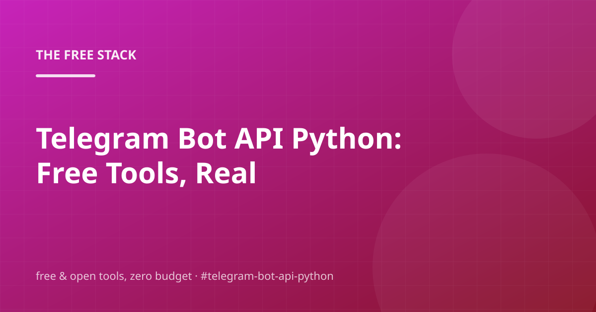

Telegram Bot API Python: Free Tools, Real Trade-offs

You don't need a budget to get good at telegram bot api python. You need a map of the free tools, and an honest read on the trade-offs between them. Here's that map — researched, written and fact-checked by the same engine that publishes this blog.
We'll walk through Telegram Bot API, Sqlite, Open-meteo Weather API, and Polite Scraping — and finish with the questions people actually ask, so you can check before you buy anything. You shouldn't have to buy anything.
Telegram Bot API
The foundation looks like this: The Telegram Bot API is free, HTTP-based and needs nothing but a token from @BotFather.
So what does that look like when you're actually doing it? Create a bot in one message, then send and receive messages, create channels, and drive webhooks entirely over plain HTTPS. It is the cheapest 'social media' channel a self-publishing site can own, and this blog posts to it when a token is configured.
For a personal project or side business, this covers you without breaking a sweat.
- Message @BotFather and /newbot to get a token
- Send messages with POST /bot<token>/sendMessage
- Optionally set a webhook with setWebhook for incoming events
Sqlite
First, the thing that actually matters: SQLite is the most deployed database in the world — free, public domain, and a single file.
Which, in day-to-day terms, means: For a self-hosted stack it removes an entire class of infrastructure: no server process, no connection pool, no backup job (copy the file). Full-text search is built in, which is plenty for a personal content database.
Write down what you change and why — your future self will thank you.
Open-meteo Weather API
Skip the fluff and start here: Open-Meteo is a free weather API with no API key, no signup and generous call limits.
So what does that look like when you're actually doing it? A single GET request returns forecast and historical data as JSON, and the non-commercial tier is free forever. It is the default answer to 'free weather api' precisely because it removes every friction step: no key, no billing, no trial.
Write down what you change and why — your future self will thank you.
- Call /v1/forecast with latitude, longitude and the variables you need
- Parse the JSON response directly into your app
- Cache the response — the data changes on a forecast horizon, not per request
Polite Scraping
The short version: The difference between 'scraping' and 'being blocked' is politeness: identify yourself, rate-limit, and cache.
Which, in day-to-day terms, means: A descriptive User-Agent, a few seconds between requests, honoring robots.txt, and caching responses are the whole etiquette. Most sites allow reasonable personal-use access; the keyless endpoints this engine uses are the same ones the search boxes use, and they reward clients who behave.
The links in the sources section go straight to the primary docs.
- Set a descriptive User-Agent with contact info
- Space requests (this engine sleeps between outbound calls)
- Cache results per query — never re-fetch what you already have
Frequently asked questions
What would you do first if you only had one free afternoon?
Mostly, yes. The Telegram Bot API is free, HTTP-based and needs nothing but a token from @BotFather. Free tiers are generous for personal projects, but a growing business should read the pricing page before scaling into it.
How much do I need to know before trying telegram bot api python?
Mostly, yes. Open-Meteo is a free weather API with no API key, no signup and generous call limits. Free tiers are generous for personal projects, but a growing business should read the pricing page before scaling into it.
What are the real limitations of telegram bot api python?
Less than you'd think. SQLite is the most deployed database in the world — free, public domain, and a single file. Start there and only add pieces when you feel actual pain.